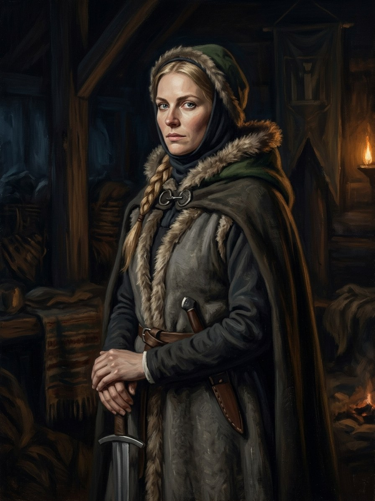

Ona¶
Relations
Hostage of: Teutonic Order (1383–1384) · Teutonic Order (1390–1392) — Released by the Order in May 1392 to spread pro-Lithuanian rumours.
Practises: Žolės (herb-lore) — tier 1
Served by: Elena (Ona’s maid) (1380–1382) — Ona’s faithful maid who trades clothes with Vytautas at Krėva in autumn 1382.
Spouse: Vytautas (1370–1418)
Took part in: Ona dies · Treaty of Lyck; hostages demanded — Hostage. · Vytautas escapes Krėva in the maid’s clothes
Ona

Ona · character¶
Type |
character |
Years |
c. 1352–1418 |
Status |
Historical record |
Note |
Grand Duchess of Lithuania (d. 1418); Vytautas’s first wife and steadfast political partner who orchestrated his escape from Krėva. |
Summary¶
Ona (Anna, d. 31 Jul 1418), wife of Vytautas, Grand Duchess of Lithuania, is the saga’s moral mirror for its protagonist. We first meet her in Book I as the “silly grieving woman” who comes to Krėva in mourning to visit her husband; the mask hides a war-council mind that smuggles in a maid’s dress, a knife and a sleep draught and gets him out. Twice a hostage of the Order, mother of Sofija and, in the saga, of two sons who die as hostages in 1392, she becomes his conscience and then his judge. She knew about the secret flame in the Trakai vault and never asked; she dies in 1418, taking with her the last person who knew him before Krėva.
Appearance & tells¶
Fair hair and sharp, observant blue eyes; fragile-looking, like a court lady, but with a soldier’s stamina. She dresses modestly and carries a hidden dagger. She hates noise (Book IV ch. 9). Her habits are her tells: she never signs letters that could be read by anyone but their recipient; she hears truths and says nothing, setting her hands in her lap and looking at her husband “as if she saw him for the first time”; and when she has stopped looking at him (after the sons die, Book II ch. 9-10) the reader feels it. In the years Vytautas is away she teaches the boy Žiežirba to read in secret (Book III ch. 21). She is the one who speaks into his right ear; Julijona later takes this over “as Ona did from the first day” (Book IV ch. 18).
Want · Need · Lie · Truth¶
Want (external) |
To protect her husband and children, who are hostages twice, and to keep the family alive: she knows that if Vytautas falls she dies with him. |
Need (internal) |
To be seen and answered by the man she manages, and to say what she knows without being the war-council in the shadows. |
Lie they believe |
A sufficiently good plan can hold a family together through any betrayal: she calls the Krėva rescue ‘a war council’, not a love scene. |
Truth they learn (or refuse) |
Some losses cannot be planned away: after the sons she stops looking at him, yet she knew about the flame and never asked (‘Grįžk, jei gali. Jei negali, žinok, kad aš žinau’). |
Arc by book¶
Book I (1382-1384). Arrives at Krėva as the “silly grieving woman” (ch. 12), swaps her maid Elena into the bed and Vytautas into the maid’s dress (ch. 13), stays behind to delay discovery; released by Skirgaila to track her husband, she travels by Brest and Masovia to Königsberg and becomes the Order’s surety for him (ch. 17-19); the exchange in 1384 frees her (ch. 28).
Book II (1388-1392). Runs the council at the Grodno court (ch. 4) and the plot of 1389 (ch. 5); a hostage again at Lyck (ch. 6); released by the Order in May 1392 to spread the Order’s message in Lithuania, she rides into his camp and watches him in silence (ch. 9); confirms Ostrów in two letters (ch. 10).
Book III (1399-1411). The diplomat who touches the rust on Kęstutis’s sword (ch. 2) and meets Švitrigaila’s anger at the stairs (ch. 8); she writes to Vytautas at Grunwald (ch. 21, unsigned, as always) and in 1411 tells him she asked nothing of him for twenty years (ch. 28).
Book IV (1411-1418). Dies on the eve of the rye harvest, 31 Jul 1418, at Trakai (ch. 9), while the fields below are singing. She tells him that after Jurgis and Ivanas died she did not want to look at him, and that the autumn they came back to Trakai she went down the vault stairs to the last step and saw the fire; she leaves a letter that Julijona reads at his death (ch. 29). Her niece, Julijona, becomes his second wife (ch. 10).
Book V-VI. Echoed in the cathedral burial beside her (V ch. 2) and in Book VI ch. 26 and 30 (the young couple).
Power & magic¶
Tier 0, no gift, and no bargain. She has herb-lore (Žolės) in practice: the sleep draught of the Krėva escape is hers. Her weapons are planning, nerve and silence; her only magic is that she is believed to be a fool. The Last Flame is the one thing she knew about and never touched.
Record vs saga¶
[Historical record]: Anna (Ona Vytautienė) is probably Vytautas’s first and only wife; the marriage is dated between 1368 and 1377, about 1370. Her origins are disputed: the late Bychowiec Chronicle calls her a sister of Yuri of Smolensk (Tęgowski agrees), Jonynas argues she came from a Lithuanian noble family and may be Sudimantas’s sister (Baranauskienė notes her sisters married Lithuanian nobles; one, Agrippina, married Ivan Olshanski). She appears in the sources when Vytautas is imprisoned at Krėva in 1382 and helps him escape: the Lithuanian Chronicles say a maid swapped clothes with him; Wigand says he wore Anna’s clothes. She was in Grodno in 1389, followed him to the Order and was held for a time as a guarantee of his loyalty; the Order released her in 1392 so that she could travel to Lithuania (Urban 2006), and she confirmed the Ostrów Agreement in two letters (to Jogaila and Jadwiga). She took part in the Salynas negotiations (1398), met King Sigismund at Késmárk before 1396, and in 1400 made a pilgrimage to Dorothea of Montau’s tomb at Marienwerder. Grand Duchess consort from 1401; died 31 Jul 1418 at Trakai (the Lithuanian Wikipedia’s 31 Aug is a minority date); buried in Vilnius cathedral. Their only recorded child is Sofija (b. 1371). Source: en.wikipedia “Anna, Grand Duchess of Lithuania”.
[The saga’s invention]: Her name’s mystery; the maid Elena who lies in Vytautas’s bed and is executed (a nineteenth-century Narbutt addition, not the sources); the sleep draught and dagger under the mourning cloak; her Prussian captivity as a household scene (Book I ch. 17-19); the two hostage sons and her silence after 1392 (a contested tradition); her secret teaching of Žiežirba and her letter about the vault; the Book IV ch. 9 death scene on the eve of the harvest.
Pronunciation¶
o-NA · IPA /oˈnɐ/ · English sound-alike “oh-NAH”. Stress on the second syllable. Lithuanian form of Anna (Ona). Kęstutis and Birutė are her uošvis and anyta.
Appearances¶
Book I: ch. 12-14 (strongest), 15, 17-19, 22-25, 28; mentions in ch. 10, 11.
Book II: ch. 4-6, 9-11, 17, 20, 27, 29 and the afterword.
Book III: ch. 2, 8, 10, 11, 21, 28.
Book IV: ch. 9 (her death), 10, 18, 25, 29.
Book V: ch. 2 (the tomb), 22.
Book VI: ch. 26 (the match, c. 1370), 30.
Book IV makes her 66 in 1418 (b. c. 1352); the record has no birth year. The Book III ch. 9 “Ona” who brings Žiežirba bread is his own mother, not Vytautas’s wife.
Timeline¶
Year |
Event |
Book |
|---|---|---|
1382 |
I · Vilko Tremtis |
|
1390-01-19 |
II · Auksinis Šešėlis |
|
1418-07-31 |
IV · Nematoma Karūna |
Connections¶
graph LR
elena["Elena (Ona's maid)"]
ev_kreva_escape["Vytautas escapes Krėva in the maid's clothes"]
ev_lyck_1390["Treaty of Lyck; hostages demanded"]
ev_ona_dies["Ona dies"]
ona["Ona"]
teutonic_order["Teutonic Order"]
vytautas["Vytautas"]
zoles["Žolės (herb-lore)"]
ona -->|Hostage of| teutonic_order
ona -->|Practises| zoles
ona -->|Took part in| ev_kreva_escape
ona -->|Took part in| ev_ona_dies
ona -->|Took part in| ev_lyck_1390
ona -->|Hostage of| teutonic_order
vytautas -->|Spouse| ona
elena -->|Serves| ona
style ona stroke-width:3px